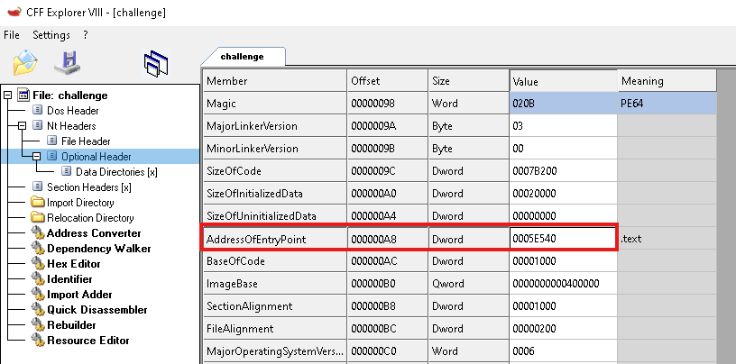
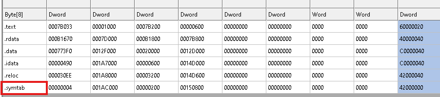
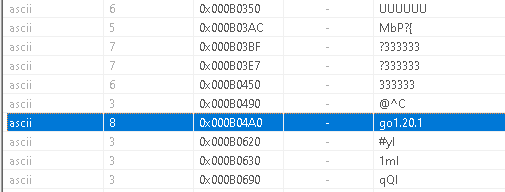
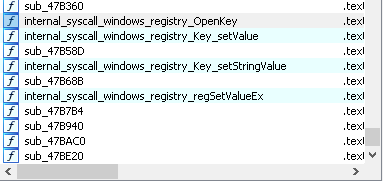
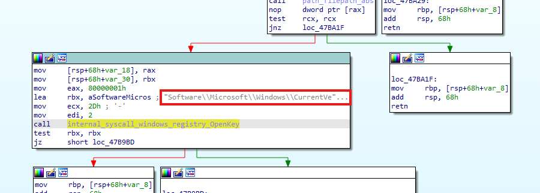
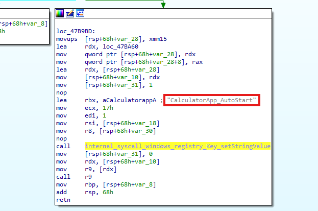
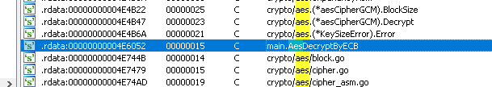

Analyzing ValleyRAT - Malops
Introduction
In this post, I will examine the sample provided in the Malops website. We will attempt to answer the questions from the challenge by analyzing the sample itself,
performing a thorough malware analysis to better understand its behavior and characteristics.
The scenario is the following: You work in the incident response team of a large industrial manufacturing corporation. Your EDR detected a ValleyRAT malware infection on a single workstation.
A correlated SIEM alert confirmed suspicious ASEP Run key modification. Your task is to extract key malware capabilities, including the embedded C2 configuration, from the provided sample.
Static Analysis
Q1) What is the entry point address of the sample?
Opening the sample with CFF Explorer, we can observe that it is a 64-bit compiled executable by inspecting the PE headers.

Additionally, by navigating to the Optional Header, we can see that the Address of Entry Point is 0x5E540. This value represents an offset relative to the program’s Image Base, which is 0x400000. Therefore, the actual virtual address of the entry point is 0x45E540.
Q2) The sample is written in a two-letter programming language. Which one?
In the sections table, we can observe that, in addition to the standard PE sections, there is also a non-standard section called .symtab. The presence of a non-standard section does not necessarily indicate that the binary is packed. In some cases, extra sections are added when a different programming language toolchain is used to compile the file, for example when the executable is compiled with Go or RUST, which often introduces additional metadata sections into the final binary.

Opening the sample with PE Studio and navigating to the Strings section, by scrolling down we can observe the following string, as shown in the figure below.
This shows that the sample was written in Go, version 1.20.1.Q3) When executed, the malware creates persistence using a Run key. Which Run key path is used?
By opening the sample in IDA, we can look at the function names table and notice some system calls related to opening and modifying Windows registry keys.

By clicking on each of these system calls and checking the cross-references, it is possible to identify the routine sub_47B940. Inside this function, there is a system call used to open a registry key, which is internal_syscall_windows_registry_OpenKey, and one of its parameters clearly contains the registry path, which is: Software\Microsoft\Windows\CurrentVersion\Run.
Q4) What is the registry value name used for persistence?
After that, the malware performs the system call internal_syscall_windows_registry_key_setStringValue, and the parameter passed to the call is CalculatorApp_AutoStart. This allows the malware to achieve persistence, so it can continue running even after the system is rebooted.

Q5) The malware decrypts a second-stage payload at runtime. Which symmetric encryption algorithm is used?
By browsing the Strings section, we can find many references to the encryption algorithm used by the sample. In particular, the following function, shown in the figure below, indicates that the algorithm employed is AES.
